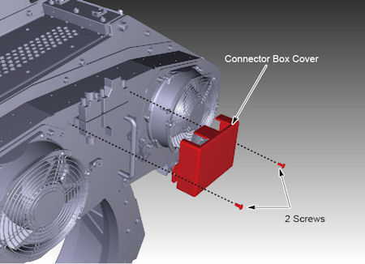
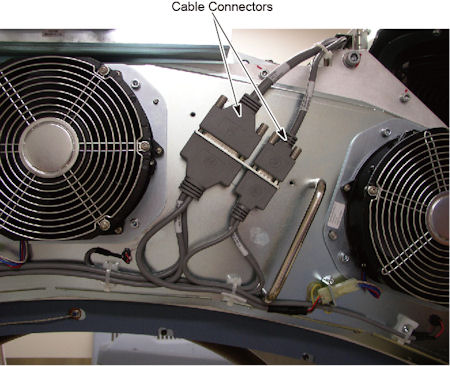
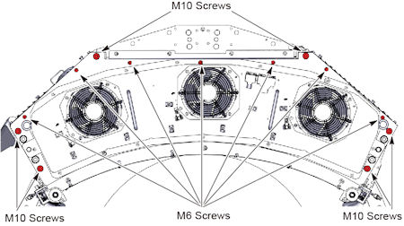
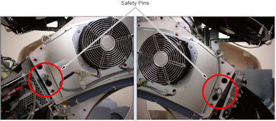
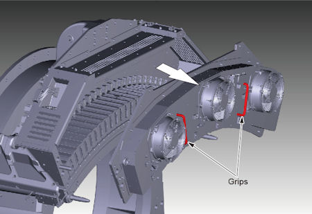
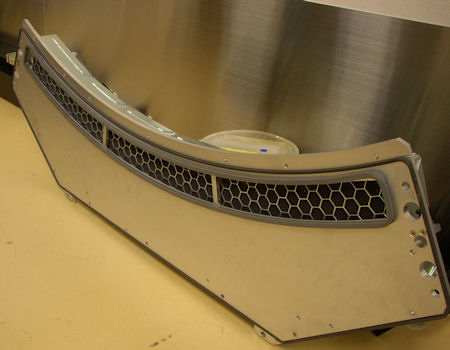

Operating Documentation
Direction 5193574-800, Rev# 22
LightSpeed 7.X Service Methods
Module Version 4.0, Version Date 6/12/15
Operating Documentation |
| Required Persons | Preliminary Reqs | Procedure | Finalization |
|---|---|---|---|
| 1 | 20 mins |
This procedure defines the necessary steps to Remove and Install the Detector Air Plenum Assembly.
| Last Revised: | June 12, 2015 |
| Item | Qty | Effectivity | Part# | Manufacturer | |
|---|---|---|---|---|---|
| FE torque wrench kit | 1 | - | 46-268445G1 or 5135228 or equivalent | - | |
| Item | Qty | Effectivity | Part# | Manufacturer |
|---|---|---|---|---|
| Tie-wraps | AR | - | - | - |
| Item | Qty | Effectivity | Part# | Manufacturer | |
|---|---|---|---|---|---|
| Plenum | 1 | - | 5480310 | - | |
| ||||
| CRUSH HAZARD. | ||||
| UNEXPECTED GANTRY ROTATION CAN CAUSE SERIOUS INJURY. | ||||
| Never service the gantry with the axial drive enabled. Use the gantry rotation lock to lock out gantry rotation. See safety menu of Service Document gui for appropriate procedures. |
| Condition | Reference | Effectivity |
|---|---|---|
Only trained service personnel should service the GE CT Scanner. | - | - |
Move table to home position, fully out and down.
Remove right side gantry cover.
Refer to Parts Replacement → Gantry → Enclosure → (Cover Removal Procedure).
Stop the rotor of X-ray tube in case of Liquid Bearing Tube before HVDC off. Refer to Liquid Bearing Tube Rotor stop procedure for details.
Turn OFF the Axial Drive and HVDC switches on the gantry’s Service Switch Panel.
Position the detector at 12 o'clock and lock gantry rotation.
Turn OFF the 120 VAC switch on the gantry’s Service Switch Panel.
Remove the gantry left side cover, top covers and front cover.
Remove the connector box cover.
Illustration 1: Connector Box Cover Removal

Disconnect two cable connectors.
Illustration 2: Cable Connectors

Remove M6 screws (x 7) and M10 screws (x 6) holding the air plenum to the DAS assembly.
Illustration 3: M6 and M10 Screws

Disengage safety pins on both sides of plenum.
Illustration 4: Safety Pins

Hold the grips on the plenum with both hands, and remove the plenum straight away from the gantry to avoid bending the plenum alignment pins on either side of the plenum.
Illustration 5: Air Plenum Removal

Make sure the plenum is set on a flat clean surface and not on top of any small objects that can poke the EMC screen.
Illustration 6: Backside of the Plenum

Install the air plenum housing being careful not to hit the EMC mesh on the backside of the plenum during installation. Make sure no cabling is caught between the detector casting and the air plenum.
Engage safety pins on both sides of plenum.
Torque the M10 screws to the value shown in Table 1.
Table 1: M10 screw torque
| 38.4 N-m | 28.3 lb-ft | 339.6 lb-in | 391.8 Kg-cm |
Torque the M6 screws to the value shown in Table 2.
Table 2: M6 screw torque
| 8 N-m | 6 lb-ft | 71 lb-in | 82 Kg-cm |
Reconnect the two cable connectors.
Install the connector box cover, and torque the screws to the value shown in Table 3.
Table 3: Screw torque of the connector box cover
| 2.0 N-m | 1.5 lb-ft | 17.6 lb-in | 20.4 Kg-cm |
When power is restored to the gantry, check to make sure all 3 plenum fans are running. Use a piece of paper or similar object to make sure fans are pulling air into the plenum. A fan that is not running will still have the fan blades moving as air is pushed back out of the plenum through that fan port.